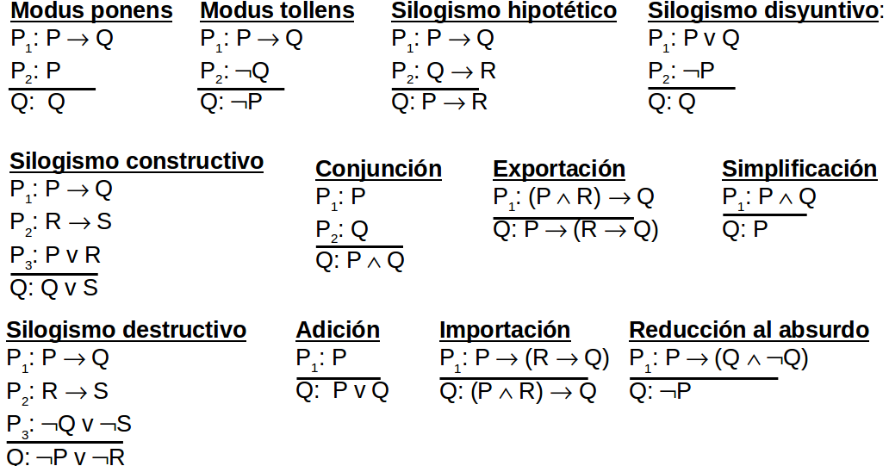
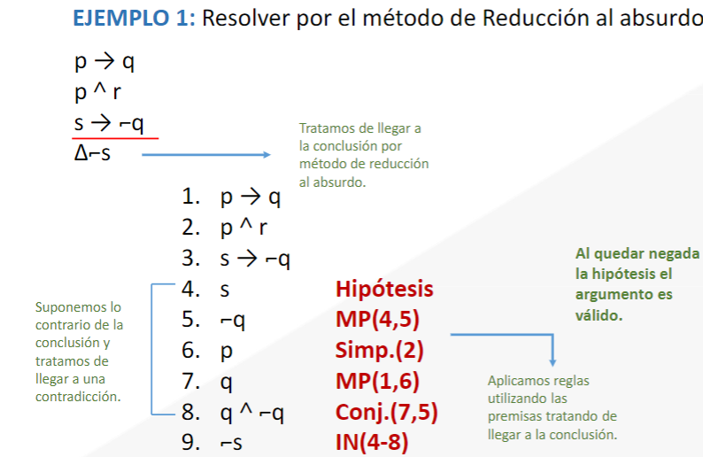

Durante la duración del curso se realizan pruebas parciales, tres para ser exactos. Estos parciales se realizan cada dos meses y están fundamentados en módulos, que son impartidos en dos o tres semanas cada uno. Es por ello que el portafolio correspondiente al curso está dividido por parciales.
Estudio formal y simbólico de la lógica simbólica y su aplicación en las diferentes áreas de la matemática y la ciencia
Tambien llamada lógica de orden cero, es la rama de la lógica matemática que estudia proposiciones, afirmaciones u oraciones, los métodos de vincularlas mediante conectores lógicos y las relaciones y propiedades que se derivan de esos procedimientos
Toda oración o enunciado al cual se le asigna un valor de verdar (V o F)
Por ejemplo:
No están afectadas por negaciones "No" o términos de enlace como conjunciones "Y", disyunciones "O" o bien implicaciones "si...entonces"
Enunciados simples, átomicos o elementales.
Se representan con las letras minusculas del final del abecedario "p, q, r, s"
| Ej. | Tipo | Simbolización |
|---|---|---|
| El cielo es azul | Simple | p |
| La capital de Rusia es Moscú | Simple | q |
| Esta lloviendo y hace calor | Compuesta | p y q |
| Mi cuñado es arquitecto e ingeniero | Compuesta | p y q |
| Las células son procariotas o eucariotas | Compuesta | p o q |
| Una ballena no es roja | Compuesta | No p |
| Operadores lógicos. | Simbolos básicos | Conectivos lógicos |
|---|---|---|
| Negación | ¬ NO | ~ |
| Conjunción | /\ Y | . |
| Disyunción inclusiva | \/ O | + |
| Disyunción exclusiva | + O...O | + |
| Condicional | -> si...entonces | ↄ |
| Bicondicional | <-> Si y solo si | = |
Tambien se le llama forma condicional a la sucesión finita de cada premisa y la conclusión, una forma argumentativa es válida si la conclusión se dervia de sus premisas.
Para identificar las premisas y la conclusión que no tengan un orden, conviene tener en cuenta estas sencillas indicaciones.
Pm1: Usted estudia otro software siempre que usted comprenda logica algoritmica.
Pm2: Se cuestiona sus habilidades puesto que le surgen dudas para proceder.
Pm3: Estudia otro software o se cuestiona sus habilidades.
C: Usted comprende logica algoritmica o le surgen dudas para proceder
p: Usted estudia otro software
q: Usted comprende logica algoritmica
r: Se cuestiona sus habilidades
s: Le surgen dudas para proceder
Pm1: p->q
Pm2: r->s
Pm3: p\/r
C: q\/s
[(p->q)(r->s)(p\/r)]->(q\/s)
Tabla que muestra el valor de verdad de una proposición compuesta, para cada combinación de verdad que se pueda asignar.
Cuando el análisis de la proposición es verdadero en su totalidad
| p | q | p/\q |
|---|---|---|
| V | V | V |
| V | F | F |
| F | V | F |
| F | F | F |
| p | q | p\/q |
|---|---|---|
| V | V | V |
| V | F | V |
| F | V | V |
| F | F | F |
| p | q | p+q |
|---|---|---|
| V | V | F |
| V | F | V |
| F | V | V |
| F | F | F |
| p | ¬p |
|---|---|
| V | F |
| F | V |
| p | q | p->q |
|---|---|---|
| V | V | V |
| V | F | F |
| F | V | V |
| F | F | V |
| p | q | p<->q |
|---|---|---|
| V | V | V |
| V | F | F |
| F | V | F |
| F | F | V |
Consiste en suponer que el resultado a demostrar es falso y llegar aa partir de ahí, a una contradicción.
Es uno de los métodos lógicos de demostración más usado en matemática para demostrar la válidez o inválidez
de proposiciones categóricas.
| Pm1 | V |
| Pm2 | V |
| Pm3 | V |
| C | F |
| Pm1 | V |
| Pm2 | F |
| Pm3 | V |
| C | F |
Este modo mejorará el cálculo de válidez lógico aplicando reglas de interferencia, reglas que son útiles para argumentos
con más de 2 premisas, se complementa el estudio con las reglas de reemplazo.
El método de deducción natural es simple, versátil y efectivo, este permitirá analizar rapidamente la válidez de muchas premisas

La deducción natural puede ser directa o indirecta
Directa: La conclusión se obtiene desde las premisas por la aplicación de las reglas de inferencia en forma sucesiva.
indirecta o reducción al absurdo: Se realiza cuando no logramos un resultado adecuado con la deducción directa. El procedimiento es el siguiente:
Si a partir de supuesto p se construye una contradicción se cancela la relación entre ambas proposiciones por lo tanto p es falso

Consiste en escribirla de la forma más sencilla posible.
Para simplificar debemos utilizar reglas de reemplazo.
Para comprobar si hay equivalencia, las tablas de verdad deben ser iguales.